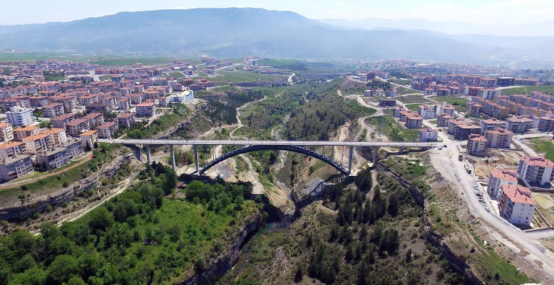
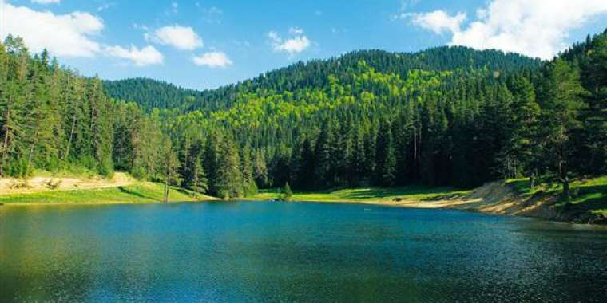

KARABÜK
Karabük merkez olmasına rağmen, Safranbolu ilçesi tarihsel evleri sebebiyle ismini daha çok duyurmuştur.
Bunun yanında Türkiye'nin ilk demir çelik fabrikasının bulunduğu Karabük merkezinde, bu fabrika sayesinde geniş bir iş sahası oluşturularak Karabük'ün gelişimi sağlanmıştır.
Karabük, kurulan demir çelik fabrikası ve yan sanayilerle hızla gelişmiş ve büyük bir kalkınma örneği yaratmıştır.
Ayrıca il genelinde tekstil sanayi özellikle hazır giyim sektöründe gelişmiştir.
Karabük, adını üzerinde yaşadığı coğrafi ortamdan almıştır. "Kara" ve "Bük" sözcükleri, kara çalılık yer anlamında, Karabük adının oluşumuna kaynaklık yapmıştır.[kaynak belirtilmeli] Bu topraklarda yaşayan Türkmen toplulukları, Karabük cemaati adını bu biçimde almışlardır. Türkiye'de 14 yer ve mevki adının bugün Karabük şeklinde geçmesi,[kaynak belirtilmeli] cemaatlerin bu topraklardan diğer yerlere göç ettiği görüşünü kuvvetlendirmektedir.[kaynak belirtilmeli]
Karabük'ün Adı
Özhan Öztürk'e göre Karabük adı Türkçe “siyah” ve “kuzey”, anlamlarına gelen kara ile bük kelimesinin ise “çalılık” ve “dere kenarında yer alan arazi” anlamlarında kullanılan 'bük' kelimelerinin birleşiminden oluşmaktadır. Bununla birlikte Osmanlı tahrir defterlerinde Karabük adlı bir Türkmen kavminin adına rastlanması bir topluluk adı olabileceğini de düşündürmektedir [2].

Karabük tarihi
Safranbolu ilçesinin Öğlebeli Köyüne bağlı 13 haneli bir köyaltı yerleşim birimi olan Karabük, Ankara - Zonguldak Demiryolu üzerinde küçük bir istasyon konumunda iken, sanayileşme ile birlikte önemli bir merkez haline gelmiştir. 3 Nisan 1937’de temeli atılan Karabük Demir Çelik Fabrikaları 6 Haziran 1939’da faaliyete geçmiştir. Buna paralel olarak nüfus yoğunluğunun artmaya başladığı Karabük'te 25 Haziran 1939’da belediye teşkilatı kurulmuştur. 1941 yılında Safranbolu ilçesine bağlı bucak olan Karabük 3 Mart 1953 tarihinde 6068 sayılı kanunla Zonguldak İline bağlı bir ilçe haline gelmiştir. Karabük, 6 Haziran 1995 gün ve 22305 sayılı Resmi Gazetede yayınlanan 550 sayılı Kanun Hükmünde Kararname ile Çankırı’dan; Ovacık ve Eskipazar ilçeleri ile Zonguldak’tan; Eflani, Safranbolu ve Yenice ilçelerinin birleştirilmesiyle Türkiye’nin 78. İli olmuştur.
Karabük'ün Coğrafi Yapısı
Arazi yapısı
Karabük etrafı yüksek dağ ve tepelerle çevrili bir havza karakteri gösterir. 250–500 m. yüksekliğe sahiptir. Kuzeyindeki dağlık alandan kaynaklanan tali dereler, şehre doğru taşıdıkları maddelerle alüvyal bir dolgu oluşturmuştur.
Yeryüzü Şekilleri
Karabük ilinin önemli bir kısmı Kuzey Anadolu Dağları’nın batıda kalan kısmını oluşturan dağların uzantılarından oluşur. Kuzey Anadolu Dağlarının bir parçasını oluşturan ildeki dağlar kıvrım dağlarıdır. Bu dağların yüksekliği 2.000 m. yi geçmez. Karabük’ün kuzeyinde, batıya doğru uzanan geniş bir dağlık alan bulunmaktadır. Küre Dağları’nın uzantıları niteliğindeki bu alanda, ortalama 1.400 m. yüksekliğe sahip Çiğdem tepe-Boyunduruk tepe-Tekirdağ-Üçbel tepe-Döneğen tepe-Çanakçı tepe ve Başköy dağları yer alır. Bolu Dağları’nın uzantısı niteliğinde olan Yenice çevresindeki en önemli yükselti ise Keçikıran tepesi (1.400 m.) dir. Karabük’te en önemli yaylalar, Avdan Yaylası, Dede Yaylası, Sorkun Yaylası, Uluyayla, Göktepe Yaylası, Sarıçiçek Yaylası ve Boduroğlu Yaylası’dır. Karabük’ün doğal güzellikleri arasında kanyonların ayrı bir yeri vardır. Daha çok Safranbolu’da kireçtaşı tabakalarının derin biçimde yarılması ile kanyonlar ortaya çıkmıştır. Bölgenin arazi yapısını ilgi çekici hale getiren bu kanyonların başlıcaları İncekaya Kanyonu Düzce(Kirpe) Kanyonu, Tokatlı ve Sakaralan (Tekekurum)’dır. Yenice’de yer alan Şeker Çayı ise 6,5 km. uzunluğunda, kenarları oldukça dik ve yüksek olan Şeker Kanyonu’nu oluşturmuştur. İlde yer alan Bulak (Mencilis) ve Hızar Mağarası en tanınmış olanlarıdır. 6.502 m uzunluğu ile Türkiye’nin 4. büyük mağarası olan Bulak (Mencilis) mağarasında karstik oluşumlar ve bir yer altı nehri bulunmaktadır. Ayrıca, Sipahiler Köyü’nde bulunan ve 61 basamakla çıkılan bir mağara bulunmaktadır. Karabük ilinin en önemli akarsuyu Filyos Irmağı’dır. Bu ırmağın iki önemli kolu olan Araç ve Soğanlı çayları il topraklarındaki önemli akarsulardır. İlimizde doğal göl bulunmamaktadır.

Karabük'ün İklimi
Karadeniz Bölgesi’nin Batı Karadeniz Bölümü’nde yer alan Karabük’te Karadeniz ikliminin özellikleri görülmektedir. Yalnız Karabük, kıyıdan içeride kaldığı için, Karadeniz’in nemli havasından yeterince yararlanamamakta, karasal iklimin özellikleri daha ağır basmaktadır. Karadeniz ikliminden karasal ilkime geçiş sahasındaki Karabük’te geçiş tipi iklim etkili olmaktadır.
Karabük'ün Bitki Örtüsü Ve Ormanları
Dağların geniş yer kapladığı Karabük’te ormanlar son derece yaygındır. İlimiz, Türkiye geneli ormanlık alan durumlarına göre % 68,8’lİk orman alanı ile birinci sırada yer almaktadır.
